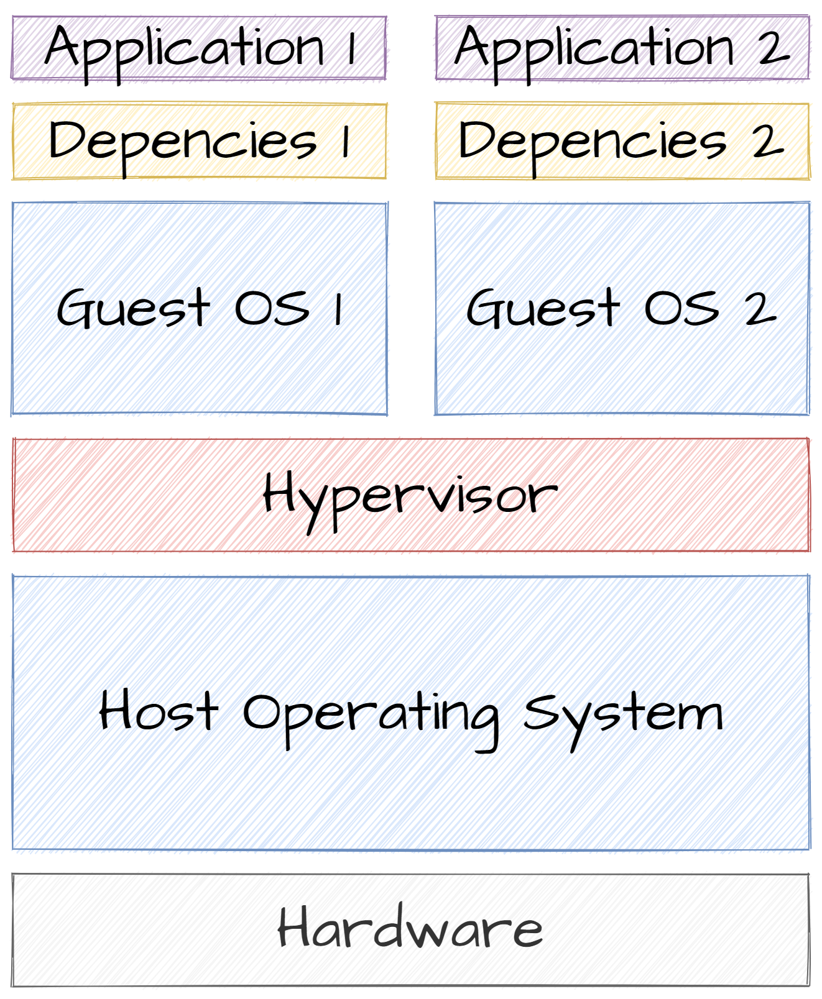

Mise en contexte
La virtualisation
1 machines physique = plusieurs machines logiques
La virtualisation
✅ Avantages
- Meilleurs utilisation des ressources
- Possibilité d'avoir différents OS sur une machine
- Simuler un environnement complexe
La virtualisation
üò± Inconv√©nients
- Coûteux en ressources (2 OS)
- Beaucoup de services inutiles dans un OS
- C'est long !
- Difficile à répliquer sur des postes de bureau
Meet Docker üê≥
- Première version en 2013 (c'est assez récent)
- À la base pour système UNIX, mais maintenant version windows (mais Linux > Mac > Windows)
- Permet de résoudre les problèmes de la virtualisation
- Principe d'infrastructure as code
In a nutshell
Les avantages ✅
- Facile de créer une image
- Une image se lance rapidement
- Plus souple qu'une VM
- Orienté 1 container = 1 application
- Système de couche
Les Inconv√©nients üò±
- Demande un coût d'entrée
- Rajoute de la complexité au métier de dev/data scientist
- Volatilité et gestion du stockage
Les technos sous jacentes
- Namespaces : permet de faire des processus dans les processus avec des identifiants identiques
- cgroups : cloisonner les ressources (CPU, RAM, disque)
- netfilter/iptable : réseau
- Linux security module : gestion sécurité appels système
Hands-on üíª
- Ouvrez 2 terminaux
- Regarder les processus actifs avec ps -au
- Exécutez la commande suivante dans un terminal
sudo unshare -f -p --mount-proc usr/bin/sh - Regarder les processus actifs avec ps -au dans les deux terminaux
Les couches dockers

Les couches dockers

Les couches dockers
- Duplication d'info
- Images artificiellement grosses
- Problème de stockage et réseau
Les couches dockers

Les couches dockers
- Mutualisation d'info
- Images toujours aussi grosses
- Mais possibilité d'utiliser des couches en local
Les couches dockers

Les couches dockers
- Techniquement les systèmes de fichier s'additionne
- Mais la couche peut altérer les couches du dessous (ajout/suppression/modification)
Hands on : mon premier container üê≥
- Installez Docker : doc officielle
- Lancez l'image hello-world
sudo docker container run hello-world
Que s'est-il passé ?
- Verification si image en local
- Récupération de l'image (avec des couches)
- Lancement de l'image
- Arrêt du container
Les bases de docker
Les commandes de base 1
#Lancer un container
sudo docker container run [-it] [-p port_local:port_container] [--name container name] [image_name]
#Voir les containers
sudo docker container ps
#Stopper un container
sudo docker stop [id/name]
#Lancer une commande dans un container
sudo docker exec [id/name] [commande]
#Rentrer dans un container
sudo docker exec [id/name] -it bash
Hands on : des containers plus pouss√©s üê≥
- Allez sur le site docker hub chercher une image ubuntu et lancez là. Lancez un shell python3 dans ce container.
- Allez chercher une image postgres, lancez-la et connectez vous à la base depuis l'outil de votre choix (shell, python, java, pgadmin etc)
Les volumes
- Actuellement nos containers sont volatiles
- Logs applicative ?
- Base de données ?
- Échange de fichiers ?
- Possible de faire pointer un dossier d'un container vers un stockage externe
- S'appelle un volume
sudo docker container run [-v host/path:container/folder[:ro]] [image_name]
Hands on : containers et volumes üíΩ
- Récupérez le code d'un site statique (soit à vous, soit sur Moodle)
- Lancez un container nginx avec un volume qui pointe vers votre site
- Le dossier dans le container est : /usr/share/nginx/html
- Donnez uniquement les droits en lecture
- Pensez à mapper le port 80 du container
- Allez voir la page 127.0.0.1:80
Cr√©er ses images üß±
Dockerfile, image et container
- Dockerfile : fichier pour dire comment créer une image (recette de cuisine) (~1ko)
- Image : une application packagée pour docker (du Ko au Go)
- Container : une instance en fonctionnement d'une image
Le Dockerfile
- Suite d'instructions pour créer une image
- Commence en réutilisant une image existante
- Installation des dépendances nécessaires
- Copies des fichiers de l'application
- Lancer l'application
# Téléchargement de la dernière image python
FROM python:3.8.3-alpine
# Création de variable d'environnement
ENV PYTHONDONTWRITEBYTECODE 1
ENV PYTHONUNBUFFERED 1
# Installation de package nécessaire à lxml
RUN apk add --no-cache --virtual .build-deps gcc libc-dev libxslt-dev && \
apk add --no-cache libxslt && \
pip install --no-cache-dir lxml>=3.5.0 && \
apk del .build-deps
# installation du fichier requirements.txt
COPY requirements.txt requirements.txt
RUN pip install -r requirements.txt
COPY . .
# Run l'application
CMD ["gunicorn", "mysite.wsgi" , "-b", "0.0.0.0:8000"]
Du Dockerfile à l'image
Pour créer une image faire depuis le dossier contenant l'image
docker image build -t myimage:latest .
Hands on : mon premier docker file üê≥üêò
- Créez une image docker dérivée de l'image de postgres contenant les données présentes sur Moodle (partie Initialization scripts de la doc docker Postgres)
- Lancez votre image
- Connectez vous au container
- Vérifiez que l'image contient bien les données
Si vous êtes en avance faite la même chose avec une base mongodb
Hands on : docker et python üê≥üêç
- Récupérez le code python disponible sur Moodle
- Faites la fonctionner en local
- Mettez la dans un container docker
- Partez de l'image python:3-alpine
- Exécutez l'application au lancement du package avec CMD ou ENTRYPOINT
- Testez votre image
Hands on : docker et java üê≥‚òï
- Téléchargez l'application example de spring boot : https://github.com/spring-projects/spring-petclinic
- Faites la fonctionner en local
- Mettez la dans un container docker
- Partez de l'image openjdk:8-jdk-alpine
- Packagez l'application
- Copiez le jar
- Exécutez l'application au lancement du package avec CMD ou ENTRYPOINT
- Testez votre image

Les limites de dockers
- Déployer une appli 3 tiers (front js, back java, bdd)
- 3 images dockers, besoin de les déployer dans l'ordre bdd, back, front pour pouvoir faire les liens entre les containers.
- Besoin de faire les lien à la main
On aimerait une macro image de 3 containers
Meet Docker Compose
Compose is a tool for defining and running multi-container Docker applications. With Compose, you use a YAML file to configure your application’s services. Then, with a single command, you create and start all the services from your configuration. To learn more about all the features of Compose, see the list of features.
Docker + Docker compose
- Docker :
- Fichiers Dockerfile
- Plusieurs docker run à faire
- Docker Compose
- Fichiers Dockerfile
- Un fichier docker-compose.yml
- Un docker compose up à faire
version: "3.9"
services:
service_1:
image: tag_image
container_name: app1
ports:
- "port_local:port_container"
environment:
- var_env1=
- var_env2=
service2:
image: tag_image
container_name: app2
depends_on : service1
ports:
- "port_local:port_container"
environment:
- var_env1=
- var_env2=
Docker et les tests
Docker et les tests
- Les applications d'aujourd'hui sont composées de plusieurs services
- Comment tester de manière isolé une application complexe ?
- Se baser sur des services fait exprès ? Bof bof
- Créer des containers, c'est mieux mais laborieux
- Faire que notre code génère des containers !
Testcontainer
- Existe pour python et java
- Permet de lancer un container lors des tests
- Et de surcharger la configuration
- Permet d'avoir des tests vraiment unitaire
Testcontainer : dépendances
org.testcontainers
testcontainers
1.16.2
test
org.testcontainers
junit-jupiter
1.16.2
test
Testcontainer : créer un container
@Container # Annotation pour laisser testcontainer gérer le cycle de vie
private static PostgreSQLContainer<?> postgresDB =
new PostgreSQLContainer<>("postgres:13.2") //nom de l'image
.withDatabaseName("postgres") // passage de variable d'environnement
.withUsername("postgres")
.withPassword("secret");
Testcontainer : mettre à jour la configuration
@Testcontainers
@SpringBootTest
@ContextConfiguration(initializers = {EmployeeServiceTest.Initializer.class})
class EmployeeServiceTest {
@Container
private static PostgreSQLContainer<?> postgresDB =
new PostgreSQLContainer<>("postgres:13.2") // nom de l'image
.withDatabaseName("postgres") // passage de variable d'environnement
.withUsername("postgres")
.withPassword("secret");
static class Initializer
implements ApplicationContextInitializer<ConfigurableApplicationContext> {
public void initialize(ConfigurableApplicationContext configurableApplicationContext) {
TestPropertyValues.of(
"spring.datasource.url=" + postgresDB.getJdbcUrl(),
"spring.datasource.username=" + postgresDB.getUsername(),
"spring.datasource.password=" + postgresDB.getPassword(),
"spring.jpa.hibernate.ddl-auto=create-drop" // pour initialiser la base
).applyTo(configurableApplicationContext.getEnvironment());
}
}
Testcontainer : Faire un test
@Test
void getEmployees() {
// GIVEN
// WHEN
Iterable<Employee> employees = employeeService.getEmployees();
// THEN
assertNotNull(employees);
}
Testcontainer : Bilan
- Décorrélation entre le service de stockage et le code
- Uniquement besoin de définir un container
- Et de modifier la configuration de Spring Boot
- Car il va tout faire lui même
- On arrive à avoir rendre étanche nos tests